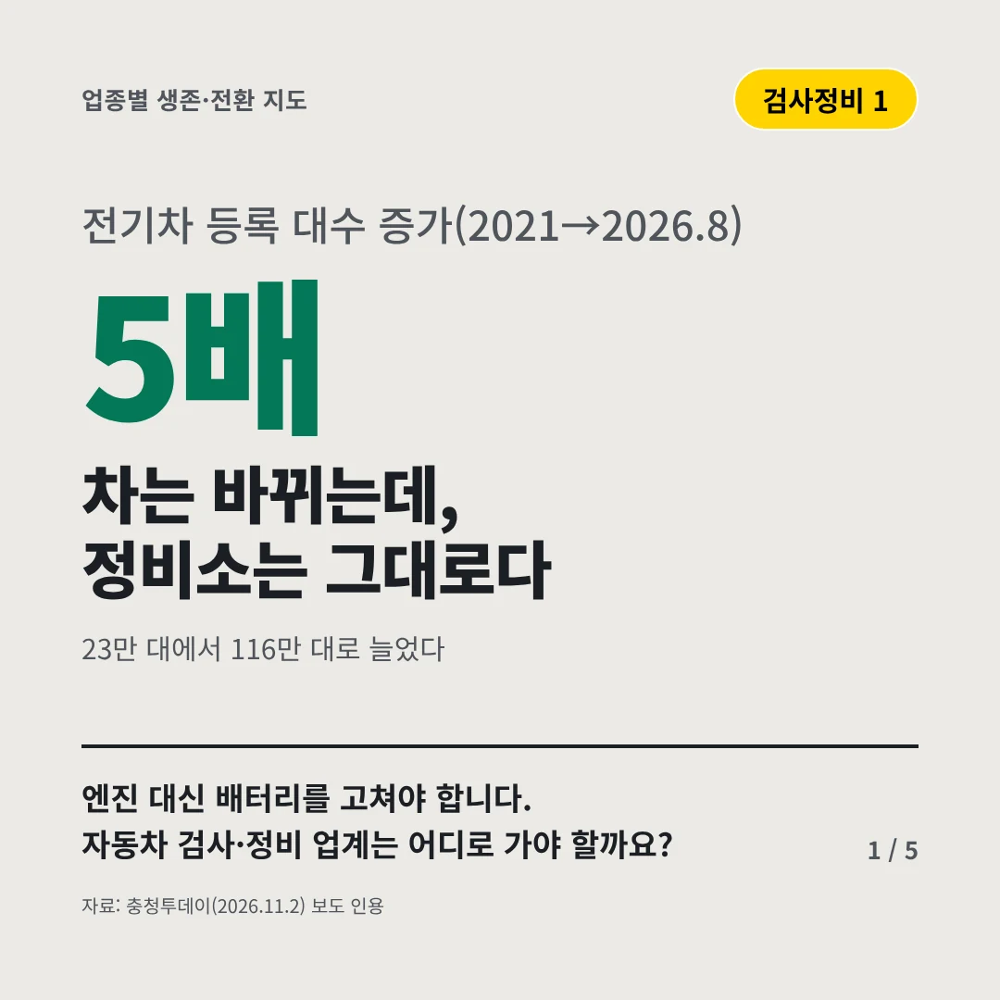
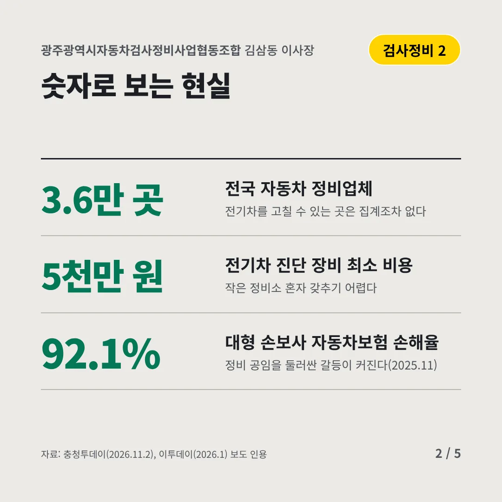
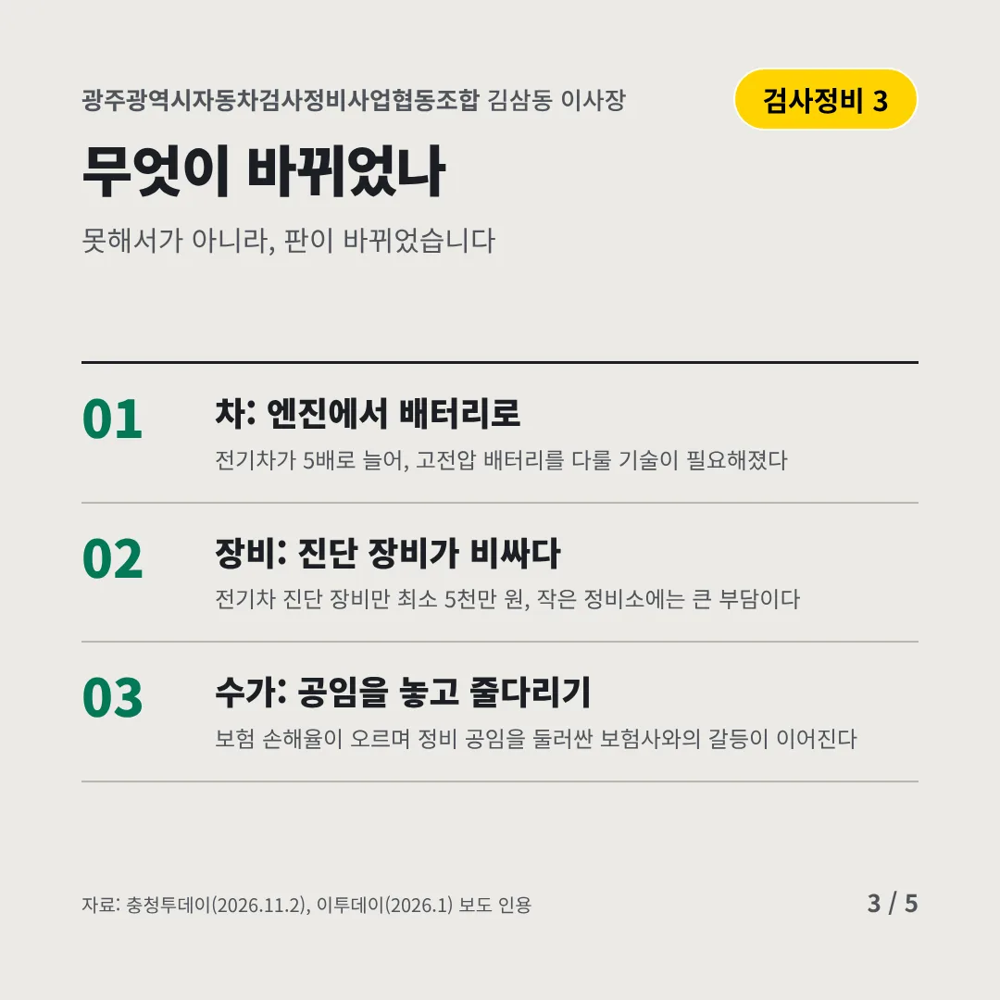
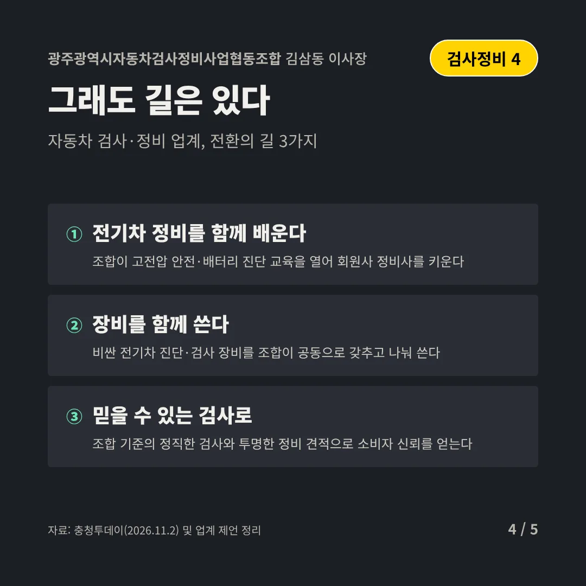
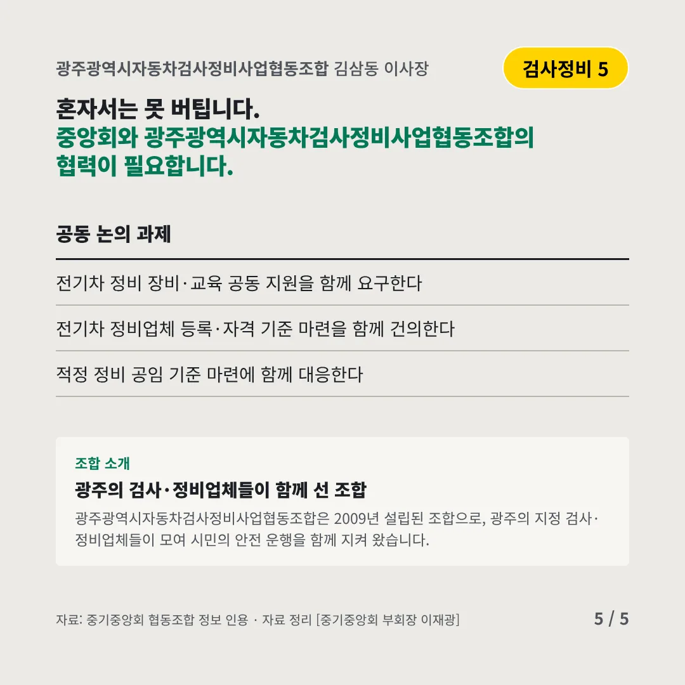
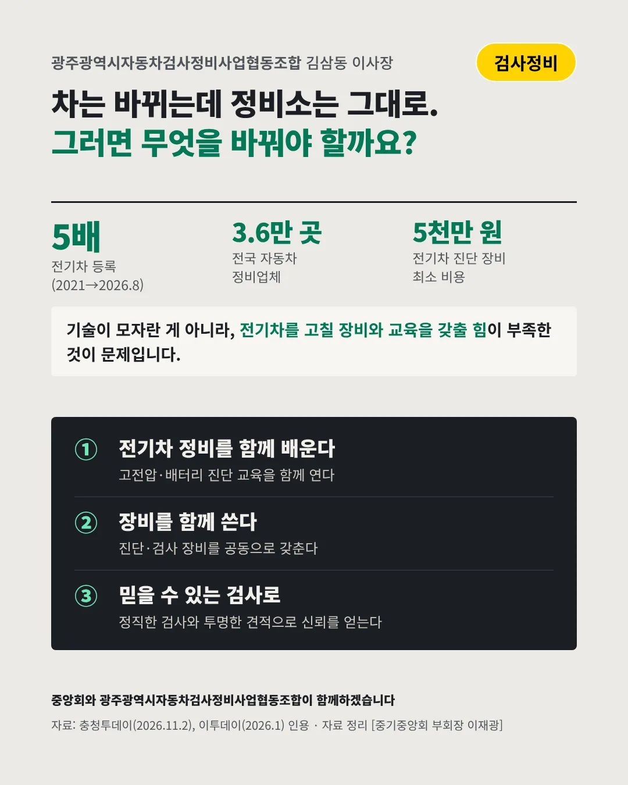

광주광역시자동차검사정비사업협동조합김삼동 이사장
차는 바뀌는데, 정비소는 그대로다
5배 전기차 등록 대수 증가(2021→2026.8)






엔진 대신 배터리를 고쳐야 합니다. 자동차 검사·정비 업계는 어디로 가야 할까요?
숫자로 보는 현실
- 3.6만 곳전국 자동차 정비업체전기차를 고칠 수 있는 곳은 집계조차 없다
- 5천만 원전기차 진단 장비 최소 비용작은 정비소 혼자 갖추기 어렵다
- 92.1%대형 손보사 자동차보험 손해율정비 공임을 둘러싼 갈등이 커진다(2025.11)
무엇이 바뀌었나
- 차: 엔진에서 배터리로전기차가 5배로 늘어, 고전압 배터리를 다룰 기술이 필요해졌다
- 장비: 진단 장비가 비싸다전기차 진단 장비만 최소 5천만 원, 작은 정비소에는 큰 부담이다
- 수가: 공임을 놓고 줄다리기보험 손해율이 오르며 정비 공임을 둘러싼 보험사와의 갈등이 이어진다
그래도 길은 있다
- 전기차 정비를 함께 배운다조합이 고전압 안전·배터리 진단 교육을 열어 회원사 정비사를 키운다
- 장비를 함께 쓴다비싼 전기차 진단·검사 장비를 조합이 공동으로 갖추고 나눠 쓴다
- 믿을 수 있는 검사로조합 기준의 정직한 검사와 투명한 정비 견적으로 소비자 신뢰를 얻는다
한 장 요약

조합 소개
광주광역시자동차검사정비사업협동조합은 2009년 설립된 조합으로, 광주의 지정 검사·정비업체들이 모여 시민의 안전 운행을 함께 지켜 왔습니다.
자료: 충청투데이(2026.11.2), 이투데이(2026.1)